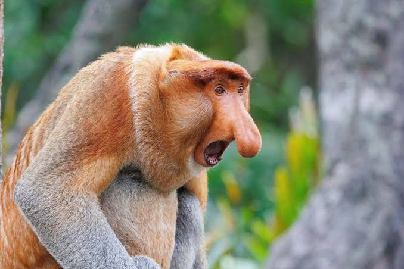

Welcome to the Monkey World!
Monkeys are fascinating primates found in various parts of the world. They are known for their intelligence, social behaviors, and playful nature. This website aims to provide you with in-depth information about monkeys, their habitats, diets, behaviors, and conservation efforts.
Why Monkeys Are Important
Monkeys play a crucial role in their ecosystems as seed dispersers and contributors to biodiversity. They help maintain healthy forest environments, which in turn supports other wildlife.
Fun Facts About Monkeys
- Monkeys are highly social animals, often living in large groups called troops.
- Some species of monkeys can use tools, such as stones to crack open nuts.
- Howler monkeys are known for their loud vocalizations, which can be heard up to three miles away.
- Capuchin monkeys are considered one of the most intelligent monkey species and are often used in research.
- Some monkeys, like the Japanese macaque, are known to bathe in hot springs during winter.
Images of Monkeys


Images help illustrate the diverse species and playful nature of monkeys.
Explore More
Learn more about different aspects of monkey life: